Израиль и Церковь · Библия и художник
ПОСЛАНИЕ от Марка Шагала
"Если бы я не был евреем, как я это понимаю, я не был бы художником..." /Марк Шагал/
Автор: Сергей Жулин
источник: "Евреи за Иисуса"
фото: Менахем Кипнис
В течение многих веков христианской эры символика распятия была табуирована для евреев. В отличие от христианского мира, где архетипы «Иисус», «Распятие», «Голгофа», «крест» получили сотериологическое (спасительное) содержание, в еврейском религиозном сознании, наоборот, они естественным образом ассоциировались со страхом, гонениями, страданиями и смертью.
Творчество Шагала – удивительное переплетение древних иудейских традиций и новаторских тенденций. Прожив без малого сто лет, меняя города и страны, Шагал всегда сохранял национальное самосознание, оставаясь человеком вне времени и географии.
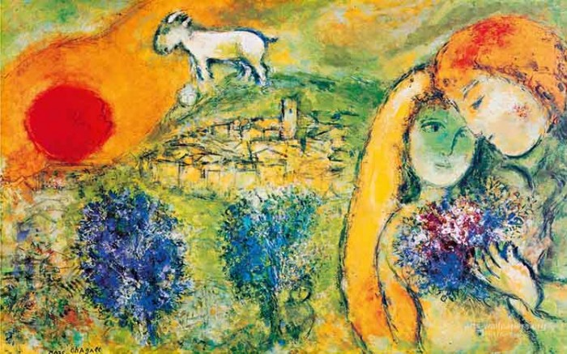
Он родился в Витебске, учился в Петербурге, дышал Парижем, жил в США. Но всюду и в любых обстоятельствах оставался сыном еврейского народа. И куда бы ни забрасывала его судьба, Шагал всегда хранил в сердце родной город, рисуя его тихие улочки и низенькие дома даже на полотнах с видами Парижа. Витебск – вторая по значимости модель художника. Место первой – до конца жизни было занято Беллой, любимой женой, музой.
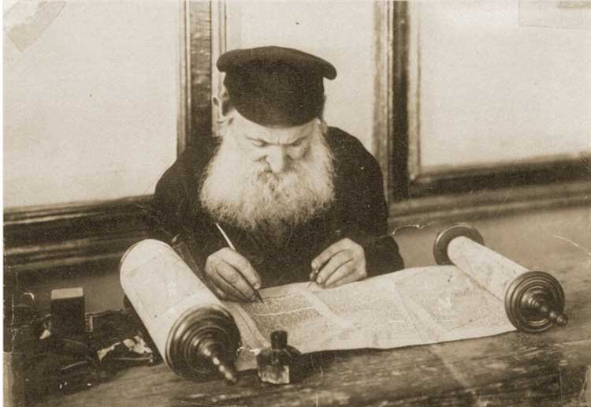
Все творчество Марка Шагала пронизано религиозными мотивами. В 1973г. он сказал: «Еще в детстве я был пленен Библией. Мне всегда казалось, да и теперь кажется, что это величайший источник поэзии на все времена. С той поры я искал ее отражение в жизни и в искусстве. Библия – эхо природы. Тайну эту я и хотел передать».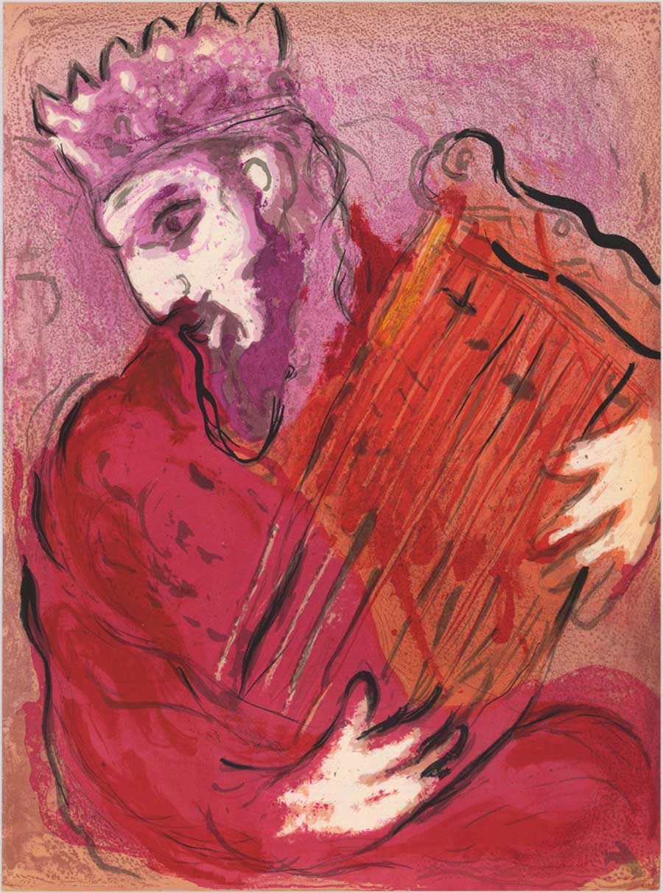
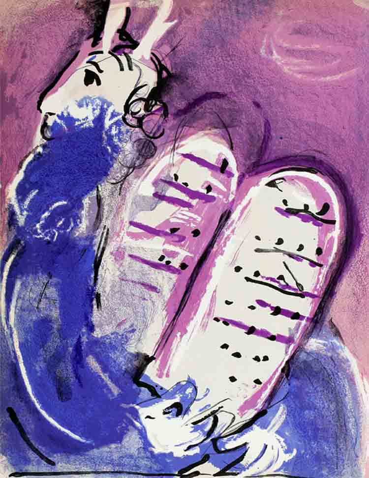
Однако в начале XX века произошел поворот, связанный со сложными процессами культурной интеграции евреев в жизнь окружающего христианского мира, волнами погромов, глобальными потрясениями, вызванными, прежде всего, первой мировой войной. Ряд еврейских поэтов и художников, прежде всего символистов, начали переосмысливать не только древнееврейские архетипы — Синай, Храм, Завет, — но и христианские, раскрывая их в контексте судеб еврейского народа. Как отмечает известный исследователь идишской литературы Дэвид Роскес, прежде неприкасаемая христианская топика стала для них не менее важным источником вдохновения, чем хасидский фольклор.
Воспоминание
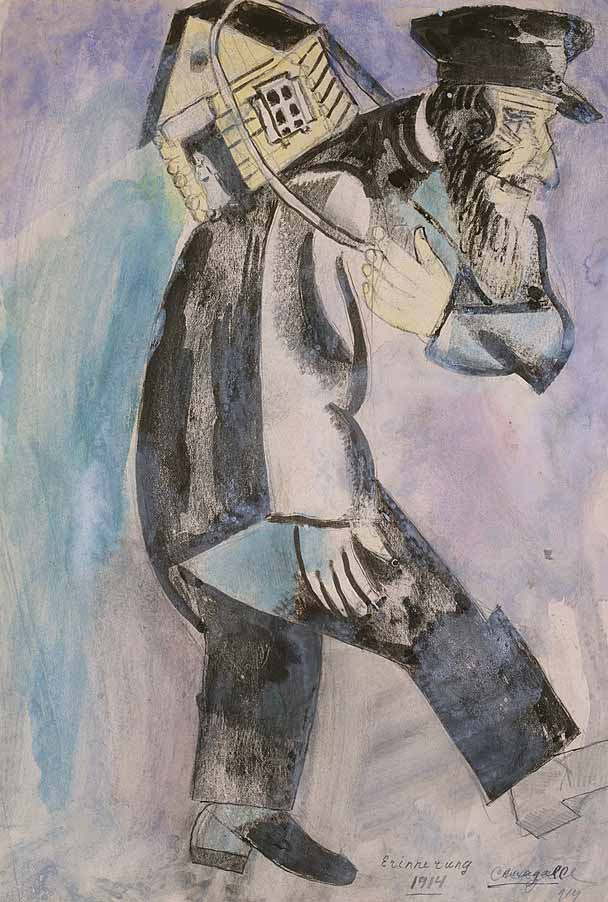
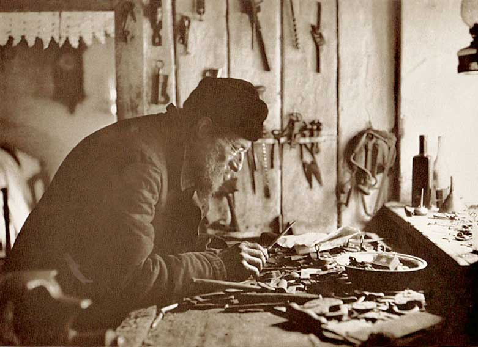
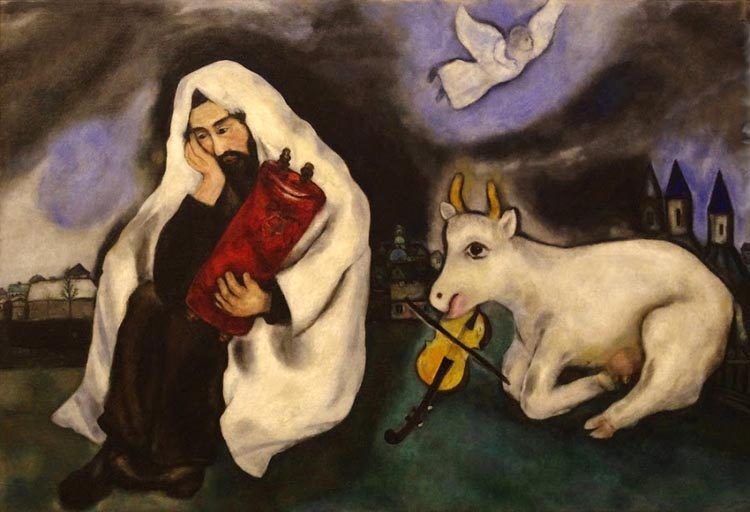
Шагал начал писать картины на религиозную тематику еще в 1911г. Он написал ряд известных работ, среди которых «Каин и Авель», «Адам и Ева», «Голгофа», «Еврей за молитвой». Некоторые библейские образы Шагал использовал, как основу для создания собственных. Его летающие люди, часто напоминают ангелов.
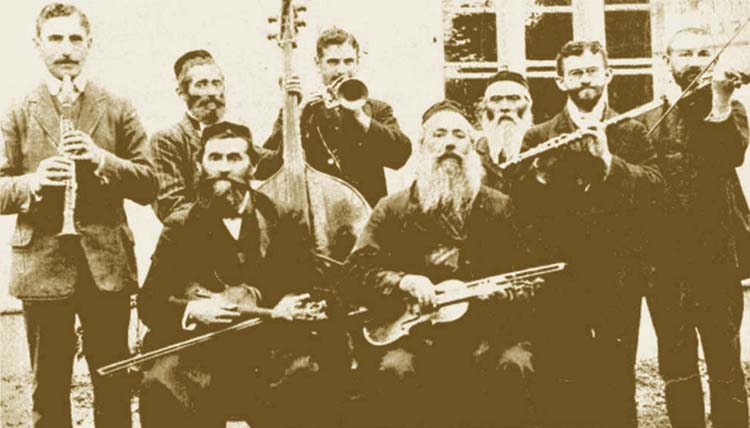
В 1931г. художник приступает к иллюстрированию Библии. Он создал 39 гуашей, 105 черно – белых гравюр, в т.ч. иллюстрации к ТАНАХу: Текстам Торы и пророка Исайи.
Не смотря на то, что Шагал был евреем, он рисовал не только ТАНАХ, но и новый Завет. Например, его кисти принадлежит полотно «Белое распятие».

Композиция и цветовая гамма распятия отсылает нас к традициям русской иконы, но при этом художник изображает Иешуа (Иисуса) в талите. В картине присутствуют чисто еврейские атрибуты – менора и свитки Торы. Ландшафты и персонажи отсылают нас к Витебску и хасидам. Картина была написана в ноябре 1938г, через две недели после трагической «Хрустальной ночи», когда были сожжены, или разгромлены 267 синагог, тысячи домов и магазинов, принадлежавших евреям, 91 еврей был убит, сотни раненных и искалеченных, ок. 3.500 арестованы и отправлены в конц. лагеря.
Сожжение синагоги в Баден-Баден 1938г.
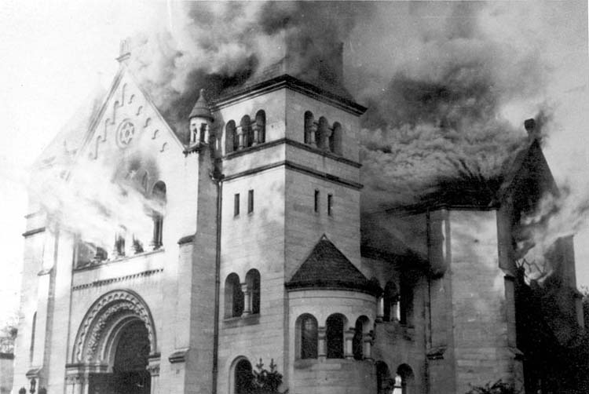
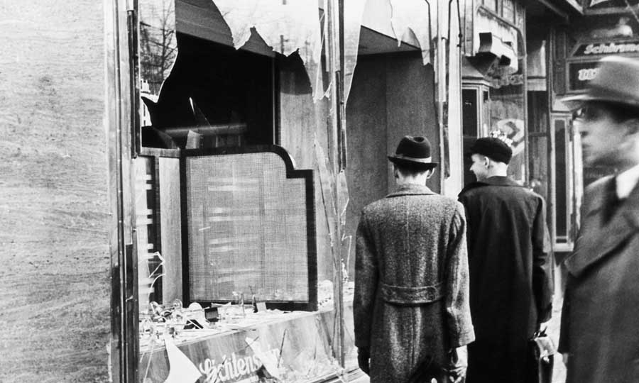
Kristallnacht - "Хрустальная ночь"
Интересно, что повторяющиеся мотивы, такие как огонь и бегство, как кажется определяют всемирный масштаб еврейской катастрофы.
Война 1966
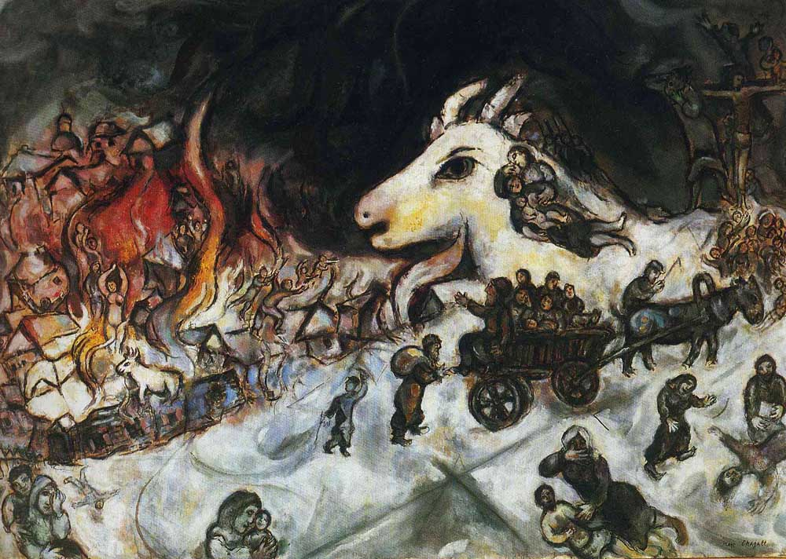
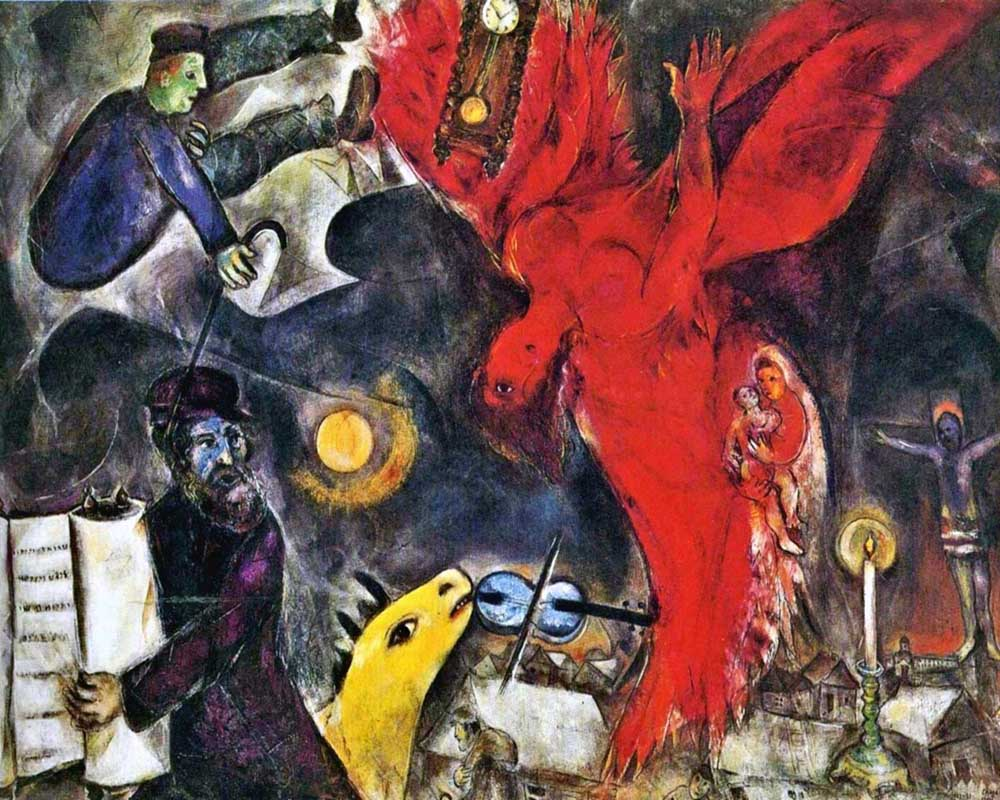
Падающий ангел 1922Образ распятого Мессии, который обычно ассоциируется с темой мученичества, становится для Шагала новым символом – Иешуа, переживающий смертные муки еврейства.
Начиная с израильского историка Йосефа Клаузнера, многие авторы посвятили свои труды ответу на вопрос о том, как могло случиться, что Иешуа, живший внутри иудаизма, положил начало движению, отделившемуся от иудаизма.
Шагал был первым художником, визуально вернувшим Иешуа в мир иудейской традиции. Таким образом картина-послание, она выражает надежду художника, что Иешуа станет для мостом мира между людьми, мостом любви без насилия.
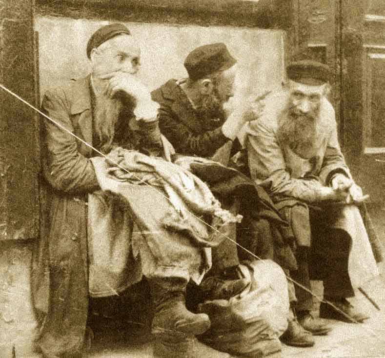
Выступая в Нью-Йорке на своем родном идише в конце мая 1945г., Шагал вновь уподобил еврейский народ Иешуа (Иисусу). Никакие всемирные конференции ни к чему не приведут, пока еврейский народ не будет снят с креста, на котором его распинали две тысячи лет.Основным направляющим элементом творчества Марка Шагала является его национальное еврейское самоощущение, неразрывно связанное для него с призванием: «Если бы я не был евреем, как я это понимаю, я не был бы художником, или был бы совсем другим художником».
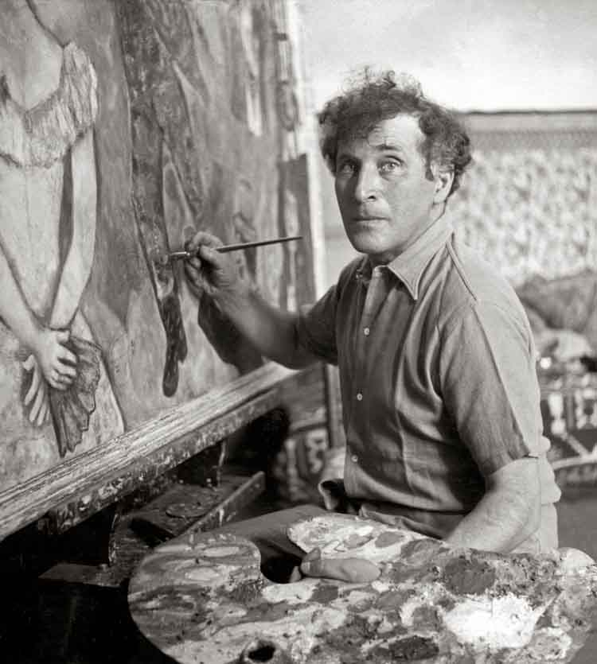
В двадцатом веке символы креста и распятия вновь возвращаются в еврейское сознание. Евангельская тема крестных мук предстает в новом свете и еще раз обнаруживает всю абсурдность юдофобных клише: евреи, распявшие Мессию – народ богоубийца, положивших начало христианскому антисемитизму.
см. также видео "Послание Марка Шагала"
Статью о витражах Шагала на Библейские темы см. здесь
От редактора: По-моему, искусство Шагала несет в себе элементы пророческого творчества. На своих полотнах он размышляет о судьбах Израиля и Церкви из язычников. Он ищет точку примирения, исправления, очищения иудейской и христианской традиций от чуждых Библии толкований. Возможно, он видел больше, чем видим мы с вами?